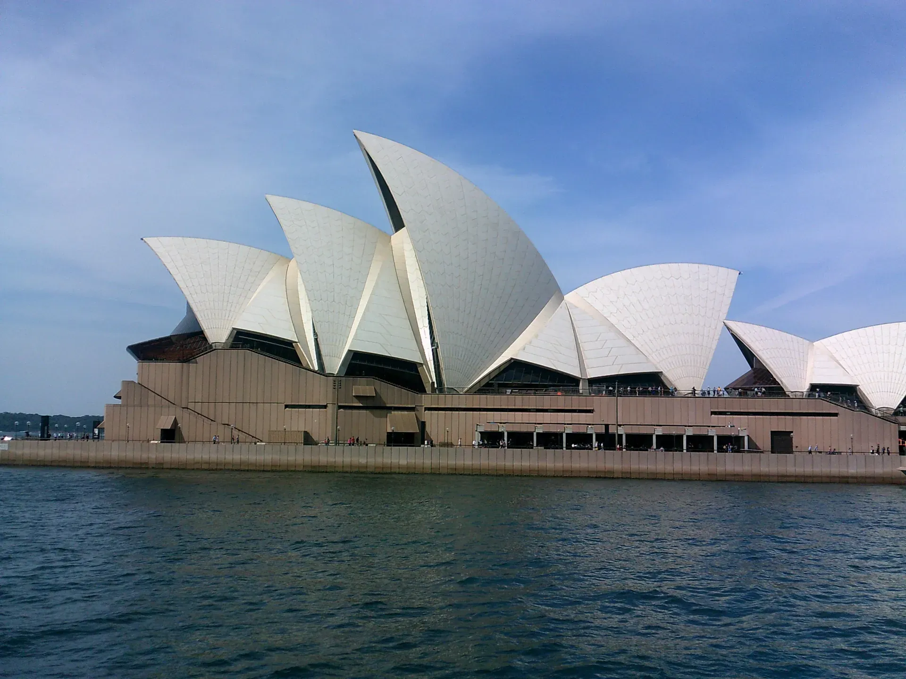
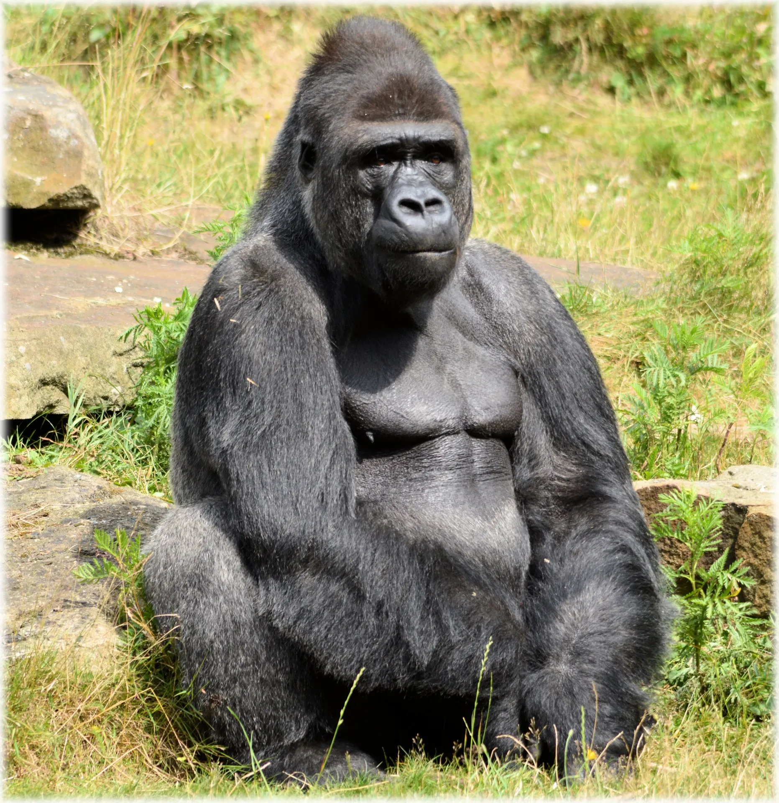
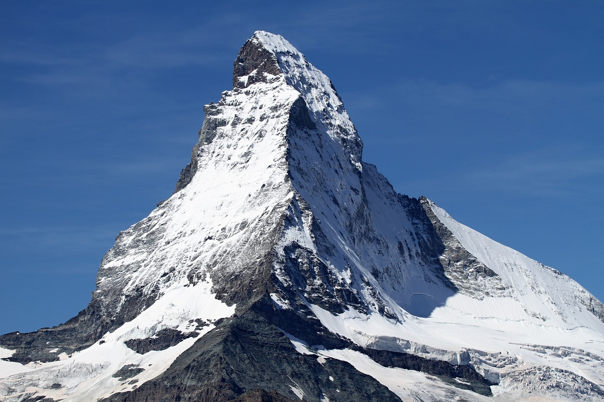
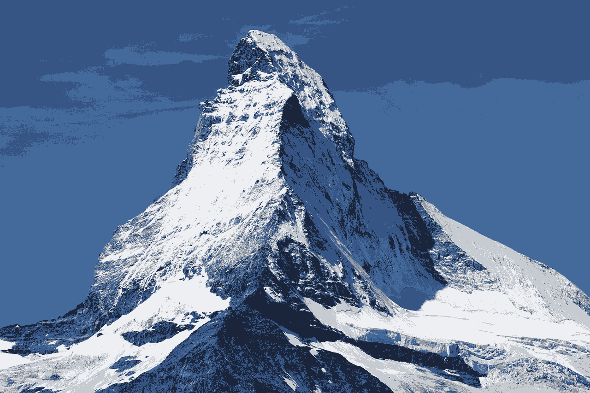
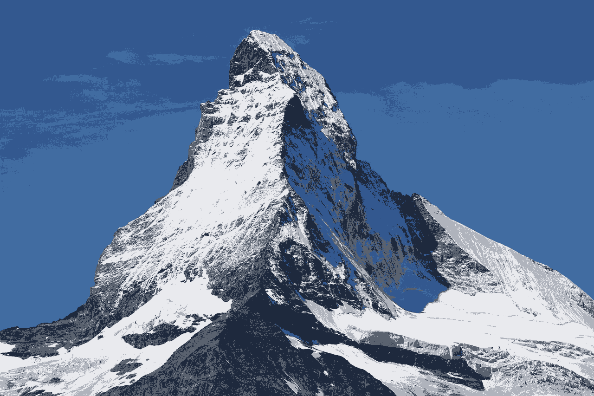
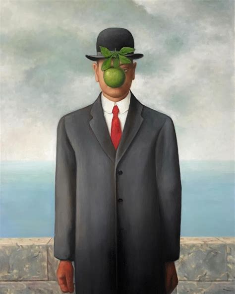
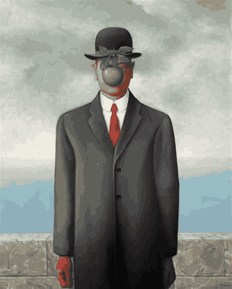
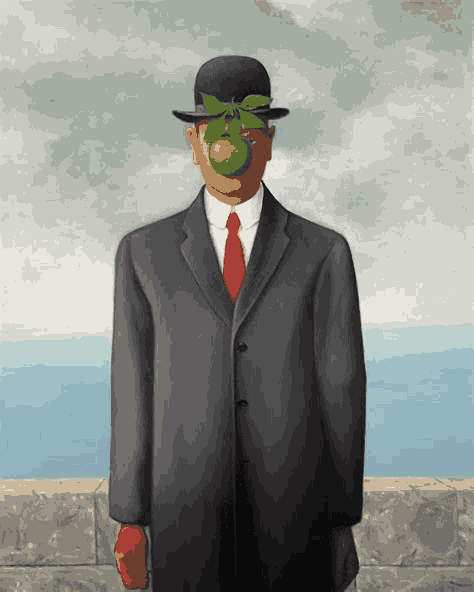

Overview
The aim of this project was to produce a lightweight converter that takes an image and replaces it with a pixelated version using ASCII characters. There are plenty of existing ASCII art generators which vary considerably in their techniques and approach. What separates this one is the use of the k-means algorithm for colour discretisation and the direct use of the luma component Y from the JPEG image for character selection.

This converter works by taking a JPEG image with colour information represented in the YCbCr colour space. A font size can be selected by choosing the height of the characters. Then a reduction step divides the image into blocks with the size of the bounding box of the characters (for Courier New, the glyph bounding box has the dimensions \(1229 \times 2320\) and so the width is the nearest integer width preserving this ratio). Each block is replaced with a pixel whose colour is selected from the block as the closest to its mean colour. The k-means algorithm is then performed on the reduced image. This replaces each pixel colour with one from a reduced palette. Finally, for each pixel in the reduced image, a character is selected whose coverage decreases linearly with the luma value, meaning that darker pixels have more coverage. The result is saved in an HTML file so that it can be easily displayed.
JPEGs and YCbCr
I was keen to retain the colour information of the original image and display it with plain HTML/CSS. So that the resulting file wouldn't be huge, I decided to run the image through a k-means clustering step so as to reduce the number of colours to a fixed set of size \(k\). Furthermore, I decided to leave the JPEG image in its native YCbCr colour space. This space, like RGB, uses three channels. Two representing the colour information (chrominance) in the image and one representing the brightness (luma) of a pixel. The reasoning behind using this colour space in JPEG images stems from the way our eyes perceive differences in colour and brightness. We are far more sensitive to variations in intensity than variations in colour and so, in producing a JPEG image, more samples of the Y pixel will be produced. In this way, my plan was that, in the k-means algorithm, I could use a distance measure that would give greater weight to the Y coordinate and less significance to the Cb and Cr values and so produce a more optimised reduction of the number of colours (needing fewer colours to produce a similar visual result to an equally weighted algorithm). In practice, it didn't turn out this way and, for small values of \(k\), the results appear slightly better with a weighting favouring the colour values. This may be due to the fact that the JPEG compression had already reduced the density of colour information a significantly. Also, it was clear in the eventual results that the k-means algorithm reduced the vibrancy of the output image. This is likely due to the fact that the colours that are produced are averages and the distinctive and highly saturated colours are lost.

JPEG uses multiple techniques to reduce the file size such as performing a two-dimensional discrete cosine transform on every \(8 \times 8\) block of pixels and retaining the information of only the most significant coefficients, only sampling a subset of the colour information, as well as lossless data compression techniques such as Huffman coding. The implementation uses the single-header library stb_image to load the JPEG data. The colour information in JPEG files is usually in the YCbCr colour space but can also be in the RGB space. I modified the stb_image library so that the information that is loaded is not converted to RGB and instead returns the raw YCbCr data. The library returns an array of unsigned characters (bytes) which represent the colour information with each pixel represented by three consecutive byte values; the Y, Cb, and Cr values, respectively.
K-means
The k-means algorithm randomly selects \(k\) pixels as the initial "centroids". At each stage of the algorithm, the pixels are partitioned based on which centroid they are closest to according to a chosen distance measure. The centroids are then updated to be the mean colour of the pixels in their cluster. Centroids with no assigned pixels are left the same. This process repeats until the displacement of the centroids over each step becomes negligible. The algorithm then replaces each pixel with its associated centroid colour. In this way, the image is replaced with one having at most \(k\) distinct colours.
The distance used by the k-means algorithm for two colours \(a\) and \(b\) is \[ d(a, b) = w_y (a_Y - b_Y)^2 + w_c \big((a_{Cb} - b_{Cb})^2 + (a_{Cr} - b_{Cr})^2\big) . \] This involves a luma weight \(w_y > 0\) and a chroma weight \(w_c > 0\). The square root can be omitted as it doesn't affect the ordering of distances.
In practice, the centroids have continuous values and the pixels themselves only have unsigned char coordinates.
This is handled by rounding the centroid coordinates to the nearest unsigned char value whenever they are assigned to a pixel.
The distance measure
The k-means algorithm includes a notion of distance between different colour values. As mentioned before, I had originally thought that assigning a greater weight to the luma, and therefore punishing larger changes in the shading, would produce a more accurate representation of the pixelated version of the image. In practice, the opposite seems to be true.
The following images show the result of applying the k-means algorithm to full-resolution images, thus restricting their colour palette. The first is the original image, whilst the second and third are the images with the reduced colour palette. The weightings for the centre images are \(w_y = 4.0\) and \(w_c = 1.0\), whereas the right images use \(w_y = 0.5\) and \(w_c = 1.0\).



For this image, the reduced versions both show banding in the sky. The chroma-weighted image has a more noticeable inaccuracy in the shading on the shaded face of the Matterhorn. The luma-weighted image uses less accurate colours for the rock which, to my eye, produces a less accurate representation overall.



In this image, a larger pallet was required for the reductions to retain a reasonable degree of colour variation. The chroma-weighted image reproduces the colours of the bricks, the tie, and the apple fairly accurately. The luma-weighted image loses the colour of the apple but preserves slightly more detail on the apple and the right hand. In this case again, it seems to me that the more accurate representation, and the one that will serve a pixelated representation better, is the one that preserves the colours better.
It seems that the averaging effects of the k-means algorithm negatively affect the colours and contrast of the image more than they affect the shading. To counter the loss of vibrancy, the weight should be skewed in favour of the colour values.
Of course, experiments on just two test images of a randomised algorithm, for which the convergence depends on where the initial centroids lie, is not a clear indication of the superiority of the heavier chroma weights.
Output
The resulting image is stored in a plain HTML/CSS file. In retrospect, it may have been a far better idea to perform some of the rendering in the browser and use JavaScript in the solution so that the output file didn't have to include tags for each and every colour change. This may be a neat addition in the future.
The characters are directly and linearly related to the luma value. The \(256\) possible luma values are divided into approximately equal intervals, one for each of the following characters:
$@B%8&WM#*oahkbdpqwmZO0QLCJUYXzcvunxrjft/|()1{}[]?-_+~<>i!lI;:,^`.[SPACE]
Each pixel is assigned a character based on its luma value.
Implementation
The C++ source can be found in the public GitHub repository. The command-line application accepts an image file path, an integer value for the desired number of colours, an integer value for the font size (with larger values producing a coarser representation), and, if there is another argument, the image will have a black background.